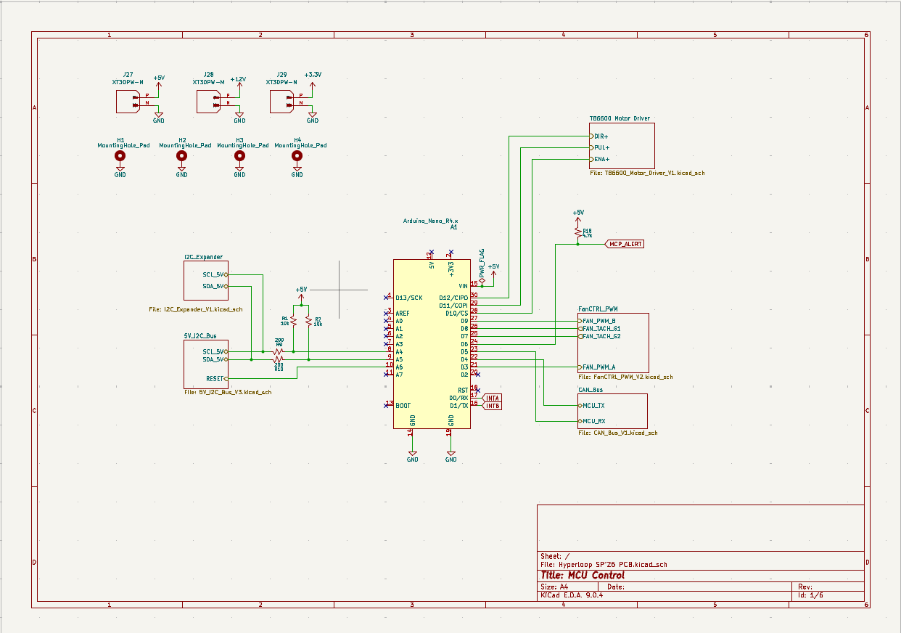
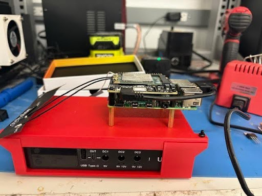
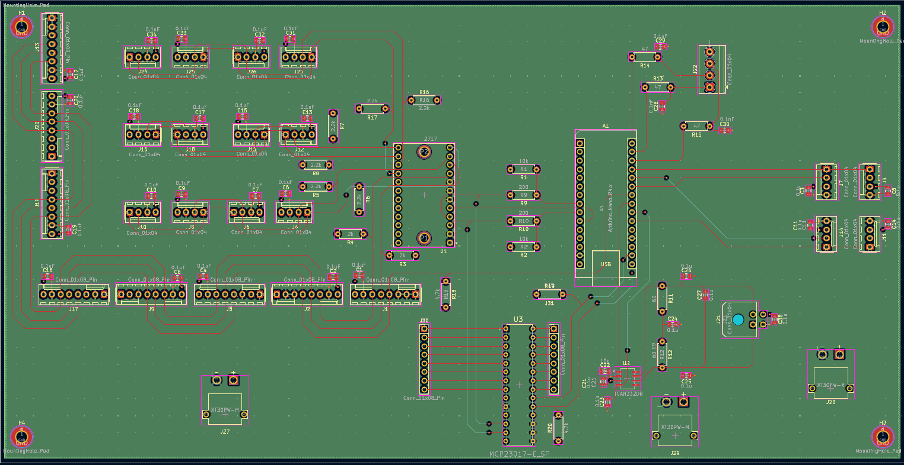

Electrical · UNIT-E1
ECC
Electronics, Controls & Communications — the brain of the pod. Embedded systems, state machines, sensor fusion, and real-time telemetry.
Platform
Arduino / RPi
Loop Rate
1kHz
Comms
CAN + WiFi
Custom PCBs
6+
ECC
The Pod's
The Pod's
Nervous System
ECC is responsible for everything that thinks, senses, and communicates on the pod. We design custom PCBs, write embedded firmware, and build the state machine that governs every phase of a competition run — from pre-launch checks to emergency stop.
Our communications stack links the pod to the ground control station in real time, streaming sensor data and receiving commands over a redundant wireless link. We also design the ground control dashboard for live visualization during runs.
Core Responsibilities
check_circle
Embedded Firmware
Real-time C/C++ firmware on STM32 microcontrollers for sensor reading and actuator control.
check_circle
State Machine
Hierarchical state machine governing all pod operational modes and fault responses.
check_circle
PCB Design
Custom sensor boards, motor driver boards, and communication modules.
check_circle
Ground Control UI
Real-time telemetry dashboard for live monitoring during competition runs.
IMG-E1-01

IMG-E1-02

Tools & Software
KiCad
STM32CubeIDE
C / C++
Python
CAN Bus
ROS2
Join the Team